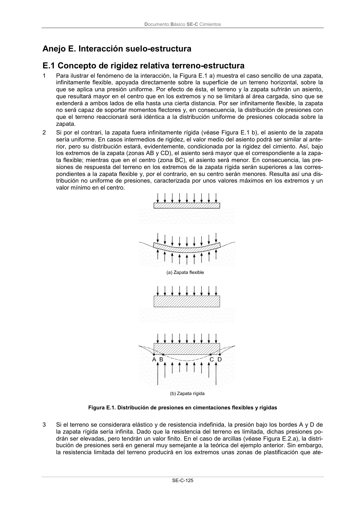

DB-SE-C · Fragmento de PDF p130 · versión 2019-12-20 · capa oficial
Formatos: JSON compacto · Markdown · PDF fuente
Ámbito del documento · texto del ámbito · documento y tablas
ID técnico a0244 · PDF pág. 130-131 · jerarquía no validada por persona · no es capítulo: sin_linea_de_encabezado · padre: raíz · literal original en el contenido: «Anejo E. Interacción suelo-estructura E.1 Concepto de rigidez relativa terreno-estructura»
Anejo E. Interacción suelo-estructura E.1 Concepto de rigidez relativa terreno-estructura E.1 Concepto de rigidez relativa terreno-estructura 1 Para ilustrar el fenómeno de la interacción, la Figura E.1 a) muestra el caso sencillo de una zapata, infinitamente flexible, apoyada directamente sobre la superficie de un terreno horizontal, sobre la que se aplica una presión uniforme. Por efecto de ésta, el terreno y la zapata sufrirán un asiento, que resultará mayor en el centro que en los extremos y no se limitará al área cargada, sino que se extenderá a ambos lados de ella hasta una cierta distancia. Por ser infinitamente flexible, la zapata no será capaz de soportar momentos flectores y, en consecuencia, la distribución de presiones con que el terreno reaccionará será idéntica a la distribución uniforme de presiones colocada sobre la zapata. 2 Si por el contrari, la zapata fuera infinitamente rígida (véase Figura E.1 b), el asiento de la zapata sería uniforme. En casos intermedios de rigidez, el valor medio del asiento podrá ser similar al ante- rior, pero su distribución estará, evidentemente, condicionada por la rigidez del cimiento. Así, bajo los extremos de la zapata (zonas AB y CD), el asiento será mayor que el correspondiente a la zapa- ta flexible; mientras que en el centro (zona BC), el asiento será menor. En consecuencia, las pre- siones de respuesta del terreno en los extremos de la zapata rígida serán superiores a las corres- pondientes a la zapata flexible y, por el contrario, en su centro serán menores. Resulta así una dis- tribución no uniforme de presiones, caracterizada por unos valores máximos en los extremos y un valor mínimo en el centro. Figura E.1. Distribución de presiones en cimentaciones flexibles y rígidas 3 Si el terreno se considerara elástico y de resistencia indefinida, la presión bajo los bordes A y D de la zapata rígida sería infinita. Dado que la resistencia del terreno es limitada, dichas presiones po- drán ser elevadas, pero tendrán un valor finito. En el caso de arcillas (véase Figura E.2.a), la distri- bución de presiones será en general muy semejante a la teórica del ejemplo anterior. Sin embargo, la resistencia limitada del terreno producirá en los extremos unas zonas de plastificación que ate- Documento Básico SE-C Cimientos SE-C-126 nuarán las presiones de borde y las redistribuirá hacia el centro de la zapata. En el caso de arenas, dado que la falta de confinamiento en el borde de la zapata, supuesta ésta en superficie, no permiti- ría el desarrollo de presiones elevadas, la distribución tomará en general la forma parabólica que se indica en la Figura E.2.b. Figura E.2. Distribución de presiones en zapatas rígidas sobre arcillas y arenas

PDF fuente redistribuible: copia fiel enlazada en esta página (SHA256 verificado).